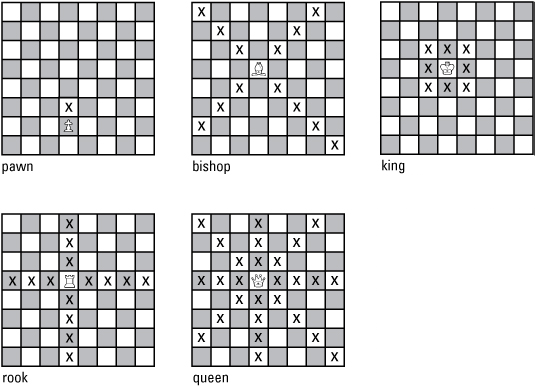
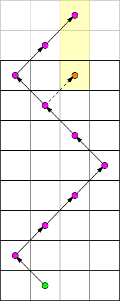
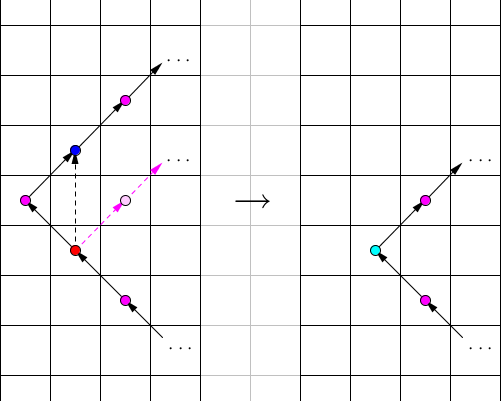

象棋世界是一个 $R$ 行 $C$ 列的棋盘，其中 $R \geq C$。所有的行依此编号为 $1$ 到 $R$，所有的列依此编号为 $1$ 到 $C$。
在象棋世界里，共有五种棋子：兵，车，象，后，王。与现实世界不同的是，骑士精神在象棋世界中已经死亡，因此象棋世界里找不到马。
象棋世界里，每种棋子可以按如下规则进行一步移动：
为了方便你理解，我们在下图给出了每种棋子的合法移动范围。其中 X 代表该棋子能移动到的位置。
最近一段时间，象棋世界发生了不少诡异的事情：某些棋子可能会被不明来源的力量所劫持，随后从象棋世界中消失。
在这种情况下，所有棋子都希望能尽快前往他们想要到达的目的地，他们还想知道，在走的步数最少的前提下，到达目的地的方案数有多少。两种方案是不同的，当且仅当这两种方案中有一步经过的格子不同。
在本题中，你需要解决下面这个问题：某个棋子将从第 $1$ 行的第 $c_1$ 列出发，到达第 $R$ 行的第 $c_R$ 列。
现在给出这个棋子的类型，以及 $c_1, c_R$ 的值，你需要求出，这个棋子最少需要走多少步，以及在步数最少的前提下，行走方案有多少种。
第一行包含三个证整数 $R, C, Q$ ($2 \leq C \leq 1000; C \leq R \leq 10^9; 1 \leq Q \leq 1000$)，表示象棋世界中棋盘的行数，列数，以及需要回答的询问数。
接下来 $Q$ 行，每行包含一个字母 $T$ ($T \in \left\{ \texttt P, \texttt R, \texttt Q, \texttt B, \texttt K \right\}$)，代表棋子种类，以及两个正整数 $c_1, c_R$ ($1 \leq c_1, c_R \leq C$)，代表起点为第 $1$ 行的第 $c_1$ 列，终点为第 $R$ 行的第 $c_R$ 列。
各字母与棋子种类对应关系如下所示：
| 字母 | 棋子种类 |
|---|---|
| $\texttt P$ | 兵 |
| $\texttt R$ | 车 |
| $\texttt B$ | 象 |
| $\texttt Q$ | 后 |
| $\texttt K$ | 王 |
对于每组询问，输出两个整数，第一个整数代表从起点到终点需要走的最少步数，第二个整数代表在步数最少的前提下，从起点到终点的方案数。
因为方案数可能很大，请输出其对 $10^9 + 7$ 取模后的结果。
特别地，若无法从起点到达终点，请输出一行 0 0。
由于只能直走，因此除非 $c_1 = c_R$，不然无解 (0 0)。当 $c_1 = c_R$ 时步数 $d = R - 1$，方案数 $Z = 1$。
显然有解。当 $c_1 = c_R$ 时 $d = 1, Z = 1$；否则一竖一横，$d = 2, Z = 2$。
由于车能走的路线是后的子集，因此显然有解且 $d \leq 2$。
而 $d = 1$ 容易通过定义判断，此时 $Z = 1$。因此只需考虑 $d = 2$ 时的方案数。
由 $R \geq C$ 和 $d > 1$ 知 $\left| R - 1 \right| > \left| c_R - c_1 \right|$，因此至少存在 $4$ 种永远可行的方案：一竖一横 (车) 的两种方案，以及一次竖直移动和一次对角线移动，先后可交换，也有两种方案。
对于剩下的方案，都需要在一定的条件下才能实现，列举如下：
因此 $d = 2$ 时 $Z$ 满足 $4 \leq Z \leq 7$，具体的取值可以通过上述方法进行判断。
首先一个显然的必要条件是 (按照正常国际象棋) 黑白染色后颜色相同，否则无解 (0 0)。下面考虑有解的情形。
由于棋盘可以过于狭长，因此 $d$ 肯定不是 $O \left( 1 \right)$ 级别的了，因此先考虑求 $d$。
首先，考虑一种合法的方案，不难证明可以通过调整法，使得每一步都触及棋盘的 (左或右) 边界，且满足总步数不增。
因此，我们可以在这个条件下进行求解。那么，首先枚举第一步是向左上还是右上，于是方案就唯一了 —— 每次向左走到左边界，然后向右走到右边界，如此不断往复，形成一个 Z 形结构。
最后判断一下走到第 $R$ 行时所到的位置在 $c_R$ 左边还是右边，结合当前的方向计算要不要最后多加一步。
这样我们可以分别求出先向左上走以及先向右上走的最小步数 $d_1, d_2$，则最终的 $d = \min \left\{ d_1, d_2 \right\}$。
(ps: 这里可以向 "后" 一样将 $d = 1$ 特判掉，因为它可能对后面的分析不太兼容)
下面考虑求 $Z$。由上述的分析知，一切先向左上走的方案的步数都 $\geq d_1$，一切先向右上走的方案的步数都 $\geq d_2$。因此我们可以将所有方案分成先向左上走和先向右上走两类，分别计数。
当然，先向左上走当且仅当 $d_1 = d$ 时才需要考虑，先向右上走当且仅当 $d_2 = d$ 时才需要考虑。由对称性下面考虑计算先向左上走的总方案数 $Z_1$。
首先，设路径 $P$，为每次都走到边界，最终额外走一段使得到达第 $c_R$ 列的路径，如下图所示：
记 $h$ 为 $P$ 路径的终点和 $\left( R, c_R \right)$ 之间的距离 (即上图中的黄色部分，对于上图有 $h = 2$)，显然 $h$ 是偶数。对于两条路径 $p_1, p_2$，我们称 $p_2$ 是 $p_1$ 的单压缩，如果 $p_2$ 恰好是 $p_1$ 中去除一对相邻的 (左上, 右上) 或 (右上，左上) 得到的，如下图所示：
称 $p_2$ 是 $p_1$ 的 ($k$ 次) 压缩，当且仅当可以通过 $p_1$ 进行 $k$ 次单压缩得到 $p_2$。
显然，每经过一次单压缩，路径终点的高度减少 $2$；经过 $k$ 次压缩，路径终点的高度减少 $2 k$。
下面证明一个主要的命题：所有先向左上走的路径，都是路径 $P$ 的 $\dfrac h2$ 次压缩，反之亦然。
记 $w$ 为起点到第一次拐点的距离 (横向距离)，如上图中 $w = 1$。那么首先有 $\color {red} {w > \dfrac h2}$。
否则，可以在起点处进行 $w$ 次压缩，得到一个先向右上走的，步数至少减少 $1$ 的路径，与 $d_1 = d$ 矛盾。
于是，折线中的每一段的长度均严格大于 $\dfrac h2$。从而任何一条 $P$ 的 $\dfrac h2$ 次压缩路径的步数仍然为 $d$ 且仍然先向左上走。
于是这条路径就是一条满足条件的路径，且压缩方案显然唯一。
考察任意一条满足条件的 $d$ 步路径，考虑将其嵌入到 $P$ 中，如果转弯不在边界上，则作竖直线跳跃。可知它是 $P$ 的压缩，且为 $P$ 的 $\dfrac h2$ 次压缩。
于是我们只需要统计 $P$ 有多少种 $\dfrac h2$ 次压缩。
注意到在压缩总次数不超过 $\dfrac h2$ 的情况下，由于每段路径长度严格大于 $\dfrac h2$，因此每个转弯处都可以进行任意多次压缩。
而转弯的总数为 $d - 1$，因此原问题相当于选择 $d - 1$ 个非负整数使得其总和等于 $\dfrac h2$。
因此方案数 $$ \large \color {fuchsia} {Z = \binom {d - 2 + \frac h2} {d - 2}} $$
记 $H = \dfrac h2$，则答案就等于 $\dfrac {\left( d - 2 + H \right) !} {\left( d - 2 \right) ! H !}$，由每一段路径长度 $> \dfrac h2$ 知 $H < C - 1 = O \left( C \right)$，因此 $H$ 不是很大；但 $d = O \left( \dfrac RC \right)$ 可以非常大，因此不能直接预处理组合数。
这里有两种方案：
由于 $R \geq C$，所以显然有界，且步数 $d$ 恒等于 $R - 1$。
那怎么计算方案数呢？我们显然有一个 $O \left( R C \right)$ 的 DP —— 记 $f_{i, j}$ 表示到达第 $i$ 行第 $j$ 列的方案数。
但是这样复杂度不能接受。考虑 DP 的状态，第二维的状态只有 $O \left( C \right)$ 种，因此可以想到使用矩阵快速幂优化，时间复杂度 $O \left( C^3 \log R \right)$，虽然快了一点，但是还是无法接受。
归根结底还是计算矩阵的幂的问题。那么怎么计算矩阵的幂呢？这道题中特征值和特征向量不好看，因此对角化就不太可能，因此只能通过 Cayley-Hamilton 定理，即特征多项式优化了。
这道题的转移矩阵比较简单，是一个 $C$ 阶方阵，我们记作 $\mathbf M_C$：$$ \mathbf M_C = \begin{bmatrix} 1 & 1 & 0 & 0 & \cdots & 0 & 0 & 0 \\ 1 & 1 & 1 & 0 & \cdots & 0 & 0 & 0 \\ 0 & 1 & 1 & 1 & \cdots & 0 & 0 & 0 \\ 0 & 0 & 1 & 1 & \cdots & 0 & 0 & 0 \\ \vdots & \vdots & \vdots & \vdots & \ddots & \vdots & \vdots \\ 0 & 0 & 0 & 0 & \cdots & 1 & 1 & 0 \\ 0 & 0 & 0 & 0 & \cdots & 1 & 1 & 1 \\ 0 & 0 & 0 & 0 & \cdots & 0 & 1 & 1 \end{bmatrix} $$
于是我们所要求的就是 $\mathbf M_C^{R-1}$ 的各个元素，如果我们知道了矩阵 $\mathbf M_C^{R-1}$，那么每一组询问就是这个矩阵中的某个元素，可以 $O \left( 1 \right)$ 回答。
那怎么计算矩阵的幂呢？由 Cayley-Hamilton 定理，记 $p_C \left( \lambda \right)$ 为 $\mathbf M_C$ 的特征多项式，则设 $$ x^{R-1} \equiv a_0 + a_1 x + a_2 x^2 + \cdots + a_{C-1} x^{C-1} \pmod {p_C \left( x \right)} $$
则有 $$ \mathbf M_C^{R-1} = a_0 \mathbf I + a_1 \mathbf M_C + a_2 \mathbf M_C^2 + \cdots + a_{C-1} \mathbf M_C^{C-1} $$
首先由 $\mathbf M_C$ 本身的性质可对其按第一行 (或最后一行，列) 展开，可知 $$ p_C \left( \lambda \right) = \left( \lambda - 1 \right) p_{C-1} \left( \lambda \right) - p_{C-2} \left( \lambda \right) $$
于是可以在 $O \left( C^2 \right)$ (或 $O \left( C \log C \right)$) 时间内得到 $p_C \left( \lambda \right)$。
其次，考虑矩阵 $\mathbf M_C^r$，其中 $0 \leq r \leq C - 1$。考虑此时它在 $\left( i, j \right)$ ($1 \leq i, j \leq C$) 位置上的值 —— 即从 $\left( 0, i \right)$ 走到 $\left( r, j \right)$ 的方案数。
注意这时的棋盘是满足列数严格大于行数的，因此我们考虑通过格路容斥计算的时候只需容斥一层就够了 (即简单的减法原理)。具体地，设 $W_{r, d} = \left[ x^d \right] \left( x^{-1} + 1 + x \right)^r$ 表示允许跨过边界从 $\left( 0, 0 \right)$ 走到 $\left( r, d \right)$ 的方案数，那么有 $$ \left( \mathbf M_C^r \right)_{i, j} = W_{r, i - j} - W_{r, i + j} - W_{r, 2 \left( C + 1 \right) - \left( i + j \right)} $$
于是，最终的答案就等于 \begin{align*} \sum_{r=0}^{C-1} a_r \left( \mathbf M_C^r \right)_{c_1, c_R} &= \sum_{r=0}^{C-1} a_r \left( W_{r, c_1 - c_R} - W_{r, c_1 + c_R} - W_{r, 2 \left( C + 1 \right) - \left( c_1 + c_R \right)} \right) \\ &= \sum_{r=0}^{C-1} a_r W_{r, c_1 - c_R} - \sum_{r=0}^{C-1} a_r W_{r, c_1 + c_R} - \sum_{r=0}^{C-1} a_r W_{r, 2 \left( C + 1 \right) - \left( c_1 + c_R \right)} \\ &= \left[ x^{c_1 - c_R} \right] \sum_{r=0}^{C-1} a_r \left( x^{-1} + 1 + x \right)^r + \left[ x^{c_1 + c_R} \right] \sum_{r=0}^{C-1} a_r \left( x^{-1} + 1 + x \right)^r + \left[ x^{2 \left( C + 1 \right) - \left( c_1 + c_R \right)} \right] \sum_{r=0}^{C-1} a_r \left( x^{-1} + 1 + x \right)^r \end{align*}
由上式可知，我们只需预先算出 $\displaystyle f \left( x \right) = \sum_{r=0}^{C-1} a_r \left( x^{-1} + 1 + x \right)^r$ 的值，那么每一组询问就转化为它的某三项系数的线性组合，从而可以 $O \left( 1 \right)$ 回答。而 $f \left( x \right)$ 的非零系数也只有 $\left[ - \left( C - 1 \right), C - 1 \right]$，因此这部分计算至多不超过 $O \left( C^2 \right)$。
考虑总时间复杂度，计算 $p_C \left( \lambda \right)$ 需要 $O \left( C^2 \right)$ (或 $O \left( C \log C \right)$) 时间，计算系数 $a_0, a_1, \cdots, a_{C-1}$ 需要 $O \left( C^2 \log R \right)$ 或 ($O \left( C \log C \log R \right)$) 时间，最后计算 $f \left( x \right)$ 需要 $O \left( C^2 \right)$ (或 $O \left( C \log C \right)$) 时间。
故总预处理时间复杂度为 $O \left( C^2 \log R \right)$ (或 $O \left( C \log C \log R \right)$)。单组询问时间显然是 $O \left( 1 \right)$。
#include <bits/stdc++.h>
#define lg2 std::__lg
using std::cin;
using std::cout;
typedef long long ll;
typedef std::pair <int, int> pr;
const int N = 1054, mod = 1000000007;
int R, C, q;
int inv[N], fact[N], finv[N];
inline int min(const int x, const int y) {return x < y ? x : y;}
inline int max(const int x, const int y) {return x < y ? y : x;}
inline void add(int &x, const int y) {x += y - mod, x += x >> 31 & mod;}
inline void sub(int &x, const int y) {x -= y, x += x >> 31 & mod;}
ll PowerMod(ll a, int n, ll c = 1) {for (; n; n >>= 1, a = a * a % mod) if (n & 1) c = c * a % mod; return c;}
void global_init(int n) {
int i, j;
for (inv[1] = 1, i = 2; i <= n; ++i) inv[i] = ll(mod - mod / i) * inv[mod % i] % mod;
for (*finv = *fact = i = 1; i <= n; ++i) fact[i] = (ll)fact[i - 1] * i % mod, finv[i] = (ll)finv[i - 1] * inv[i] % mod;
}
namespace Bishop {
int BASE, pfact[N], pfinv[N];
void init() {
int i;
BASE = max((R - C - 1) / (C - 1) - 3, 0);
for (*pfact = i = 1; i <= C + 9; ++i) pfact[i] = pfact[i - 1] * ll(BASE + i) % mod;
--i, pfinv[i] = PowerMod(pfact[i], mod - 2);
for (; i; --i) pfinv[i - 1] = pfinv[i] * ll(BASE + i) % mod;
}
inline int Cb(int a, int b) {
b -= BASE, assert(0 <= a && a <= C && 0 <= b && b <= C + 9);
return (ll)pfact[a + b] * finv[a] % mod * pfinv[b] % mod;
}
int n_step(int u, int v) {
int step = 1, height = u, zig;
zig = (R - height - 1) / (C - 1);
step += zig, height += (C - 1) * zig;
if (step & 1) // north-east
return step + 1 + (v <= R - height);
else // north-west
return step + 1 + (v > C - R + height);
}
int height(int u, int v, int step) {
int h = u + (C - 1) * (step - 2);
if (step & 1) // north-west
return h + (C - v);
else // north-east
return h + (v - 1);
}
pr query(int u, int v) {
if (!((u ^ v ^ R) & 1)) return pr(0, 0);
if (R == C && (u ^ v) == (C ^ 1) && (u == 1 || v == 1)) return pr(1, 1);
int l = n_step(u, v), r = n_step(C + 1 - u, C + 1 - v), z = min(l, r), Z = 0;
int delta;
if (l == z)
delta = (height(u, v, l) - R) / 2, add(Z, Cb(delta, l - 2));
if (r == z)
delta = (height(C + 1 - u, C + 1 - v, r) - R) / 2, add(Z, Cb(delta, r - 2));
return pr(z, Z);
}
}
namespace King {
int buf[3][N], *cp;
int f[N], g[2 * N];
int pF[N], U[N];
void polyPowerMod(int n, int d) {
int i, j, df = 1, z = lg2(n); ll t; bool alive = false;
for (; --z >= 0; ) {
df = df << 1 | (n >> z & 1);
if (df < d) continue;
if (!alive) alive = true, f[df >> 1] = true;
for (i = 0; i < d; ++i)
for (j = 0; j < d; ++j)
g[i + j] = (g[i + j] + (ll)f[i] * f[j]) % mod;
if (n >> z & 1) std::copy_backward(g, g + (2 * d - 1), g + 2 * d), *g = 0;
for (i = 2 * d - 1; i >= d; --i) if (t = mod - g[i], g[i]) {
for (j = 1; j <= d; ++j) g[i - j] = (g[i - j] + t * cp[d - j]) % mod;
g[i] = 0;
}
memcpy(f, g, d << 2), memset(g, 0, d << 2);
}
assert(df == n);
if (!alive) f[n] = 1;
}
void init() {
int i, j, *f = *buf, *g = buf[1], *h = buf[2];
for (*h = i = 1; i <= C; ++i) {
std::swap(f, g), std::swap(g, h);
for (*h = j = 0; j < i; ++j)
sub(h[j], f[j]), sub(h[j], h[j + 1] = g[j]);
}
cp = h, polyPowerMod(R - 1, C);
f = *buf, g = buf[1];
memset(f, 0, (C + 1) << 2),
memset(g, 0, (C + 1) << 2),
*g = 1, *U = *King::f;
for (i = 1; i < C; ++i) {
memcpy(f, g, i << 2);
add(*g, f[1]), add(*g, f[1]), *U = (*U + (ll)King::f[i] * *g) % mod;
for (j = 1; j <= i; ++j)
add(g[j], f[j - 1]), add(g[j], f[j + 1]),
U[j] = (U[j] + (ll)King::f[i] * g[j]) % mod;
}
}
pr query(int u, int v) {
int Z = U[abs(u - v)];
return sub(Z, U[u + v]), sub(Z, U[2 * (C + 1) - (u + v)]), pr(R - 1, Z);
}
}
namespace Pawn {
void init() {}
pr query(int u, int v) {return u == v ? pr(R - 1, 1) : pr(0, 0);}
}
namespace Queen {
void init() {}
pr query(int u, int v) {
if (u == v) return pr(1, 1);
int z = 4;
if (R == C) {
if ((u ^ v) == (C ^ 1) && (u == 1 || v == 1)) return pr(1, 1);
z += (u == 1 || u == C || v == 1 || v == R);
}
if ((u ^ v ^ R) & 1) z += (u + v > R) + (u + v <= 2 * C - R + 1);
return pr(2, z);
}
}
namespace Rook {
void init() {}
pr query(int u, int v) {return u == v ? pr(1, 1) : pr(2, 2);}
}
int main() {
int u, v; char ty; pr ans;
std::ios::sync_with_stdio(false), cin.tie(NULL);
cin >> R >> C >> q,
global_init(C),
Bishop::init(),
King::init(),
Pawn::init(),
Queen::init(),
Rook::init();
for (; q; --q) {
switch (cin >> ty >> u >> v, ty) {
case 66: ans = Bishop::query(u, v); break;
case 75: ans = King::query(u, v); break;
case 80: ans = Pawn::query(u, v); break;
case 81: ans = Queen::query(u, v); break;
case 82: ans = Rook::query(u, v); break;
}
cout << ans.first << ' ' << ans.second << '\n';
}
return 0;
}
坑1：计算后、象的时候不要忘记判断黑白染色后颜色是否相同，以及是否有 $d = 1$。
坑2：计算王时可以利用 $f \left( x \right)$ 系数 (关于 $x^0$) 的对称性减少一半计算量。